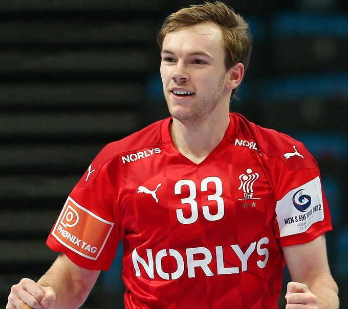
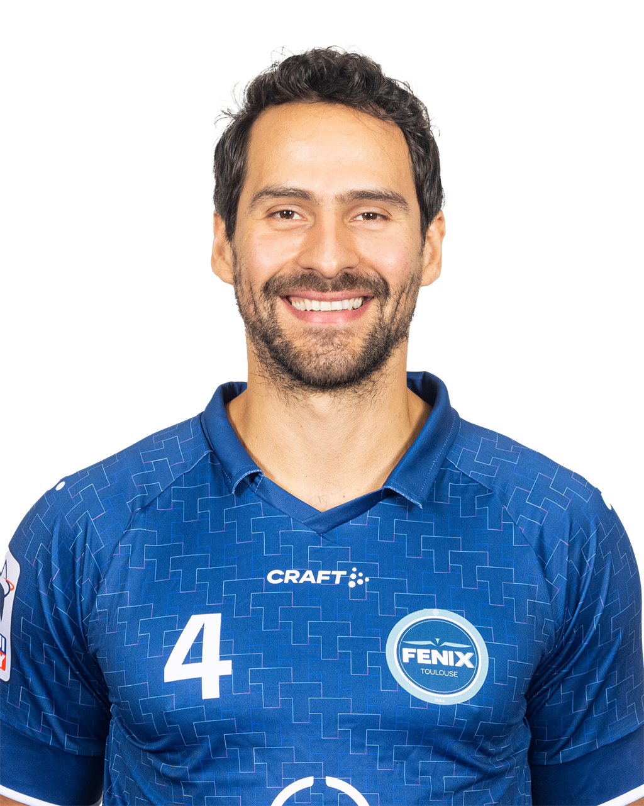
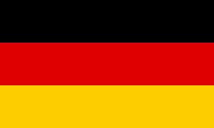
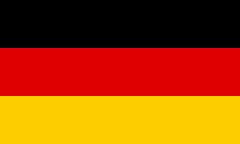
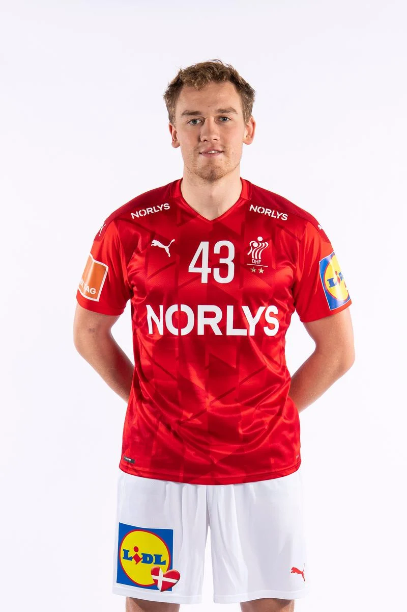
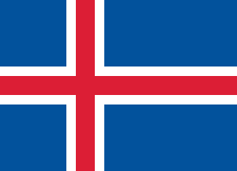
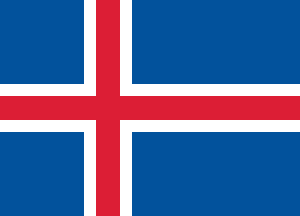
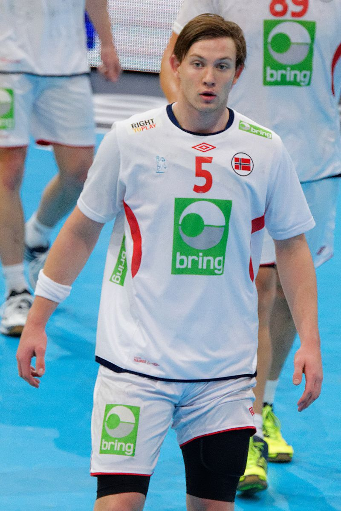
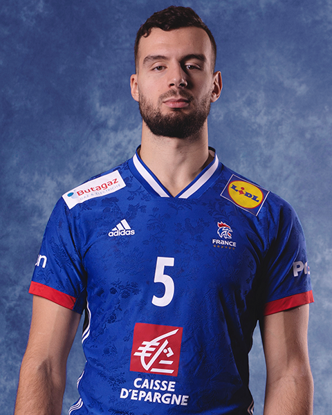
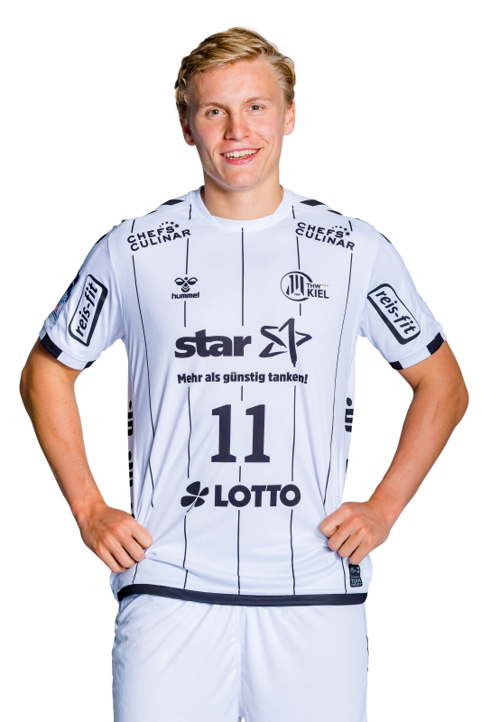

Campeonato Mundial de Balonmano Masculino de 2023
Maximos Goleadores
Lista de Jugadores
Partidos: 9
Tiros: 80
Goles: 60
Eficiencia de tiros: 75%
Partidos: 7
Tiros: 77
Goles: 54
Eficiencia de tiros: 70%
Partidos: 9
Tiros: 85
Goles: 53
Eficiencia de tiros: 62%
Partidos: 9
Tiros: 70
Goles: 51
Eficiencia de tiros: 73%
Partidos: 6
Tiros: 59
Goles: 45
Eficiencia de tiros: 76%
Jugador N° 33

Equipo: Dinamarca
Posición: Lateral Derecho
Nombre/Apellido: Mathias Gidsel
Edad: 24
Altura: 1.90 m
Jugador N° 4
Equipo: Chile
Posición: Defensor Central
Nombre/Apellido: Erwin Feuchtmann
Edad: 33
Altura: 1.95 m
Jugador N° 15
 

Equipo: Alemania
Posición: Defensa Central
Nombre/Apellido: Juri Knorr
Edad: 23
Altura: 1.90 m
Jugador N° 43

Equipo: Dinamarca
Posición: Lateral Izquierdo
Nombre/Apellido: Simon Pytlick
Edad: 22
Altura: 1.93 m
Jugador N° 4
 

Equipo: Islandia
Posición: Extremo Izquierdo
Nombre/Apellido: Bjarki Már Elísson
Edad: 33
Altura: 1.89 m
Maximos Asistidores
Lista de Jugadores
Partidos: 9
Asistencias: 52
Promedio de asistencias por partido: 5,7
Partidos: 9
Asistencias: 49
Promedio de asistencias por partido: 5.4
Partidos: 9
Asistencias: 42
Promedio de asistencias por partido: 4,6
Partidos: 9
Asistencias: 40
Promedio de asistencias por partido: 4,44
Partidos: 6
Asistencias: 39
Promedio de asistencias por partido: 6,5
Jugador N° 15
Equipo: Alemania
Posición: Defensa Central
Nombre/Apellido: Juri Knorr
Edad: 23
Altura: 1.90 m
Jugador N° 5

Equipo: Dinamarca
Posición: Defensor Central
Nombre/Apellido: Sander Sagosen
Edad: 28
Altura: 1.95 m
Jugador N° 33
Equipo: Dinamarca
Posición: Lateral Derecho
Nombre/Apellido: Mathias Gidsel
Edad: 24
Altura: 1.90 m
Jugador N° 5
Equipo: Francia
Posición: Lateral derecho
Nombre/Apellido: Nedim Remili
Edad: 28
Altura: 1.95 m
Jugador N° 11
Equipo: Islandia
Posición: Defensor Central
Nombre/Apellido: Gísli Þorgeir Kristjánsson
Edad: 24
Altura: 1.91 m